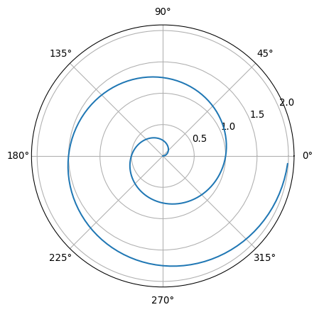

import numpy as np
import matplotlib.pyplot as plt
r = np.arange(0, 2, 0.01)
theta = 2 * np.pi * r
fig, ax = plt.subplots(
subplot_kw = {'projection': 'polar'}
)
ax.plot(theta, r)
ax.set_rticks([0.5, 1, 1.5, 2])
ax.grid(True)
plt.show()

Large files or datasets—especially those containing genomic data—no problem. This workshop introduces essential Linux commands and simple Bash scripts to streamline data manipulation tasks. We’ll cover key operations such as searching for patterns, globally modifying content, and aligning DNA sequences, such as FASTAQ and FASTA files.
No extra setup needed for linux and MacOS machines. For windows the recommended way is to install VBox. See the steps to follow:
Open the terminal and let’s create a file called maria_joanna_song
touch maria_joanna_songlet’s just copy in this text - open the file with double click and paste this song into the maria_joanna_song file
E virou!
Onde anda essa Maria?
Eu só tenho essa Maria
Eu vim do norte direto a Lisboa
Atrás de um sonho
Que eu nem sei se voa
Tanto quanto nós voávamos
Debaixo dos lencóis
A francesinha já não tem picante
E isso faz-me lembrar os instantes
Em que tu mordias os meus lábios
Depois do amor
Não sei se vou aguentar
O tempo que vou cá ficar
Porque não estás
Porque não estás aqui
As lágrimas vão secar
Mas a saudade vai continuar
No meu peito a chamar
Maria Joana, Maria Joana
Apanha o primeiro autocarro
Vem ficar pra sempre do meu lado
Maria Joana, Maria Joana
Apanha o primeiro autocarro
Vem ficar pra sempre do meu lado
Minha mãe nunca me viu partir
Mas todo o filho um dia voa
Saudade, saudade
Mamã cuida dela por mim
Diz-me porque não estás aqui
Maria, sem ti fico à toa
Saudade, saudade
Maria, eu quero-te ver
Não sei se vou aguentar
O tempo que vou cá ficar
Porque a saudade aperta o meu peito
E dói demais (dói demais)
As lágrimas vão secar
Mas a saudade vai continuar
No meu peito a chamar
Maria Joana, Maria Joana
Apanha o primeiro autocarro
Vem ficar pra sempre do meu lado
Maria Joana (Maria), Maria Joana
Apanha o primeiro autocarro
Vem ficar pra sempre do meu lado
Maria, Maria, Maria
Maria, Maria, Maria
(Maria, Maria, Maria, Maria)
Maria, Maria, Maria
Maria, Maria, Maria
(Maria, Maria, Maria, Maria)
Quantas lágrimas chorei
Quantas noites não dormi
Cada gota que eu deitei
Fez um rio que me leva a ti
Maria Joana
Maria Joana (quantas lágrimas chorei)
Apanha o primeiro autocarro
Vem ficar pra sempre
Do meu lado (quantas noites não dormi)
Maria Joana (ai, Maria)
Maria Joana (cada gota que eu deitei)
Apanha o primeiro autocarro
Vem ficar pra sempre do meu lado
Maria, Maria, Maria
Maria, Maria, Maria
(Maria, Maria, Maria, Maria)
Maria, Maria, Maria
Maria, Maria, Maria
(Maria, Maria, Maria, Maria)
Quantas lágrimas choreiTo see the full lyrics (TIP: press tab to autocomplete the file name)
cat maria_joanna_songShow the first 5 lines
head -5 maria_joanna_songDP: if you wanna link your files, you can use the raw link to GH, such as song
*** to see only the last 5 lines tail -5 maria_joanna_song
*** to see only the last 10 to 15 lines (note the “|” sign it is a pipe and let’s you combine the commands into one, without dumping the information onto your harddrive head -15 maria_joanna_song | tail -5
*** if you want to put information into your disk you can do as follows head -15 maria_joanna_song > top15_maria tail -5 top15_maria > lines10-15_maria
*** to see the output we need to either click on the file or use the terminal cat lines10-15_maria
*** how to find something in the text grep Maria maria_joanna_song
*** ok, and how to see only the matched pattern - commands have “options” grep -o Maria maria_joanna_song
*** and you can always get help (sometimes it is -h, and sometimes –help) - generally not much usefull - better to google it or ask ChatGPT grep –help
*** let’s count word Maria - three different ways to count something grep Maria maria_joanna_song | wc -l grep Maria maria_joanna_song | wc -w grep Maria maria_joanna_song | wc -c
*** and now let’s count Maria Joanna - it is important to use “” if the your search contains a space or some special character grep “Maria Joana” maria_joanna_song | wc -l grep “Maria Joana” maria_joanna_song | wc -w grep “Maria Joana” maria_joanna_song | wc -c
*** how to avoid special characters grep ( maria_joanna_song #note the error grep “(” maria_joanna_song grep ( maria_joanna_song
*** wild cards “.” and “” grep Eu maria_joanna_song grep Eu. maria_joanna_song
*** playing with multiple choices grep se maria_joanna_song grep se[i] maria_joanna_song grep se[i,m] maria_joanna_song
*** but I am in love with Donald Trump and not with Maria Joana - how to I fix the song ? sed ‘s/Maria Joana/Donald Trump/g’ maria_joanna_song | sed ‘s/Maria/Donald/g’ > donald_trump_song
*** let’s see what happened - now it doesn’t rhyme as good cat donald_trump_song more donald_trump_song
*** ok, but are we sure Donald replaced Maria? diff -u *song diff maria_joanna_song donald_trump_song
vimdiff *song
*** let’s work on multiple files at the same time - have a look how a loop is being used here grep Lisboa song for f in song ; do grep Lisboa $f ; done
*** to show which file Lisboa is found in for f in *song ; do grep -l Lisboa $f ; done
*** to show where is it found (i.e. line number) for f in *song ; do grep -n Lisboa $f ; done
*** I have just realised that “joanna” in portuguese is written as “joana” - how do I fix the name of my file *** option 1 - fix it but keep the original cp maria_joanna_song maria_joana_song
*** option 2 - neh, I don’t need the previous version - it will just cause the confusion later on mv maria_joanna_song maria_joana_song
**** now let’s try previous code grep Maria maria_joanna_song # of course it doesn’t work … - what shall I do now ?
’‘+++++ let’s don’t change anything as it is a part of a joke +++++’’
https://www.ncbi.nlm.nih.gov/books/NBK179288/
EDirect will run on Unix and Macintosh computers, and under the Cygwin Unix-emulation environment on Windows PCs. To install the EDirect software, open a terminal window and execute one of the following two commands:
sh -c "$(curl -fsSL https://ftp.ncbi.nlm.nih.gov/entrez/entrezdirect/install-edirect.sh)"
sh -c "$(wget -q https://ftp.ncbi.nlm.nih.gov/entrez/entrezdirect/install-edirect.sh -O -)"This will download a number of scripts and several precompiled programs into an “edirect” folder in the user’s home directory. It may then print an additional command for updating the PATH environment variable in the user’s configuration file. The editing instructions will look something like:
echo "export PATH=\$HOME/edirect:\$PATH" >> $HOME/.bash_profileAs a convenience, the installation process ends by offering to run the PATH update command for you. Answer “y” and press the Return key if you want it run. If the PATH is already set correctly, or if you prefer to make any editing changes manually, just press Return.
Once installation is complete, run:
export PATH=${HOME}/edirect:${PATH}to set the PATH for the current terminal session.
Let’s download some data from the Genbank - it is 16S V4 amplicon data (here the metadata)
esearch -db sra -query PRJNA783372 | efetch -format runinfo > SraRunTable.csv… TBC *** here we only need the SRRnumber cut -f1 -d, SraRunTable*.csv > runs.txt
*** to save time we will work on four samples only head -9 runs.txt > runs9.txt
*** ok, now we download the actual raw data prefetch –option-file runs9.txt
*** let’s unpack it for f in SRR* ; do fastq-dump –split-files $f ; done
*** to check the sequencing quality - it is a GUI software fastqc
*** first merge the reads flash -m 50 -M 500 -x 0.1 SRR17045211_1.fastq SRR17045211_2.fastq mv out.extendedFrags.fastq file1.fastq
flash -m 50 -M 500 -x 0.1 SRR17045213_1.fastq SRR17045213_2.fastq mv out.extendedFrags.fastq file2.fastq
flash -m 50 -M 500 -x 0.1 SRR17045221_1.fastq SRR17045221_2.fastq mv out.extendedFrags.fastq file3.fastq
flash -m 50 -M 500 -x 0.1 SRR17045222_1.fastq SRR17045222_2.fastq mv out.extendedFrags.fastq file4.fastq
flash -m 50 -M 500 -x 0.1 SRR17045223_1.fastq SRR17045223_2.fastq mv out.extendedFrags.fastq file5.fastq
flash -m 50 -M 500 -x 0.1 SRR17045224_1.fastq SRR17045224_2.fastq mv out.extendedFrags.fastq file6.fastq
flash -m 50 -M 500 -x 0.1 SRR17045225_1.fastq SRR17045225_2.fastq mv out.extendedFrags.fastq file7.fastq
flash -m 50 -M 500 -x 0.1 SRR17045227_1.fastq SRR17045227_2.fastq mv out.extendedFrags.fastq file8.fastq
*** now we filter low quality reads (here the data is kind of a fake as the fastq download needs to be adjusted wit the prefetch script) for f in file* ; do vsearch –fastq_filter $f –fastq_maxee 1.0 –fastqout $f_filtered ; done
*** it is getting messy here rm notCombined rm hist rm histogram rm *fastq
*** to lazy to empty the trash yourself ? the terminal will do that for us gio trash –empty
*** let’s convert fastq to fasta for f in *fastq_filtered ; do seqtk seq -a $f > $f.fasta ; done ;
**** blast is commented out as it is unlikely to work - we could try with internal database one day *** to save time let’s just use 10 reads from each file for taxonomic identification - we will use GenBank nt database *** for f in *fastq_filtered.fasta ; do head -20 $f > $f; done
*** let’s simplify the naming *** rename ‘s/.fastq_filtered.fastahead/.fasta/g’ *fastq_filtered.fastahead ;
*** let’s try - it may not work at all *** blastn -query file1.fasta -db nt -remote -outfmt 6 -max_target_seqs 1 -perc_identity 95 > file1_blast.txt *** blastn -query file1.fasta -db nr -remote > file1_blast2.txt
*** if doesnt work - use web based blast
**** let’s make ASV table and visualise the data cat file[0-9]*.fastq_filtered.fasta > all_samples.fasta
vsearch –derep_fulllength all_samples.fasta –output dereplicated.fasta –sizeout –relabel ASV_ vsearch –sortbysize dereplicated.fasta –output dereplicated_no_singletons.fasta –minsize 2 vsearch –cluster_unoise dereplicated_no_singletons.fasta –minsize 2 –unoise_alpha 2 –centroids ASVs.fasta vsearch –usearch_global all_samples.fasta –db ASVs.fasta –id 0.97 –otutabout ASV_table.txt
*** we will use MicrobiomeAnalyst - every tool needs the input in some specific format - here we need to change the table as well sed ‘s/#OTU ID/#NAME/g’ ASV_table.txt > ASV_table_MA.txt
*** we need some metadata (all fake) head -1 ASV_table_MA.txt | fmt -1 | sed ‘s/NAME/NAME, sample/g’ | sed ‘s/11\(/11,fish/g' | sed 's/13\)/13,fish/g’ | sed ‘s/21\(/21,fish/g' | sed 's/22\)/22,fish/g’ |sed ‘s/23\(/23,not_a_fish/g' | sed 's/24\)/24,not_a_fish/g’ |sed ‘s/25\(/25,not_a_fish/g' | sed 's/27\)/27,not_a_fish/g’ > metadata.csv
python append_braycurtis3.py ASV_table_MA.txt
# and after
python pcoa_with_metadata_quick_legend.pyFor a demonstration of a line plot on a polar axis, see Figure 1.
import numpy as np
import matplotlib.pyplot as plt
r = np.arange(0, 2, 0.01)
theta = 2 * np.pi * r
fig, ax = plt.subplots(
subplot_kw = {'projection': 'polar'}
)
ax.plot(theta, r)
ax.set_rticks([0.5, 1, 1.5, 2])
ax.grid(True)
plt.show()